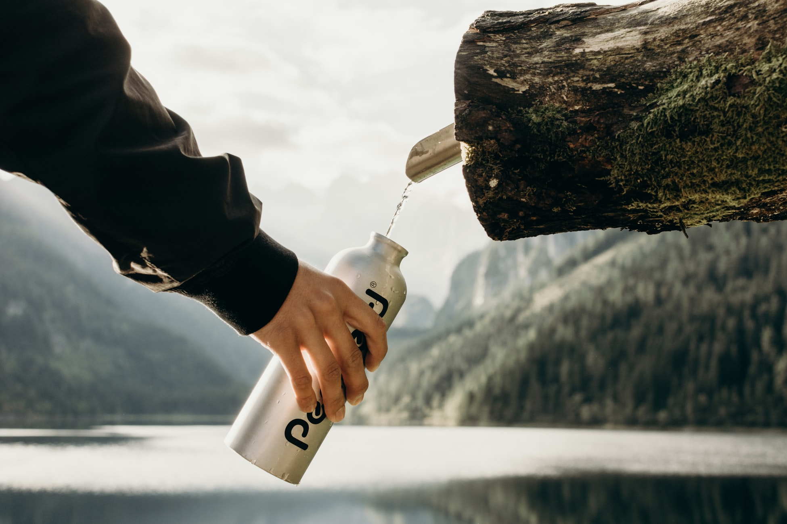
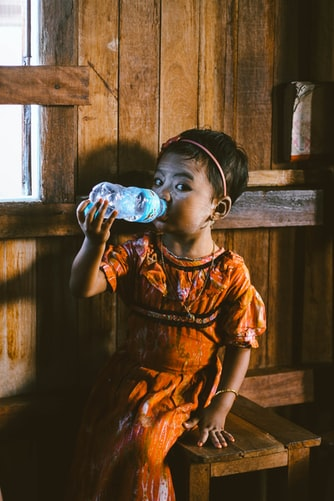

On going through our watery section, I am damn sure that this will give you answers to the many questions that come to every man’s thoughts about the basic need of our life ‘water’.
Today we are adding some interesting things to our topic that you should know in your daily life,
Are you drinking too much water? Then check here
Benefits of drinking water
Beauty benefits of drinking water
Benefits of drinking water for skin
Benefits of drinking water in morning/ empty stomach
How much water should I drink a day
Benefits of drinking hot water
Benefits of drinking water

Water Helps to Maximize Physical Performance
Hydration Has a Major Effect on Energy Levels and Brain Function
Drinking Water May Help to Prevent and Treat Headaches
Drinking More Water May Help Relieve Constipation
Drinking Water May Help Treat Kidney Stones
Water Helps Prevent Hangovers
Drinking More Water Can Help With Weight Loss
It regulates your body temperature
It aids in digestion
It helps with nutrient absorption
It helps you lose weight
It improves blood oxygen circulation
Benefits of drinking water for skin

Does drinking water help your skin??
The fact is that skin is an organ, and just like any other part of the body. your skin is made up of cells. And skin cells, like any other cell in the body, are made up of water. Without water, the organs will certainly not function properly or at their best.
If your skin is not getting the sufficient amount of water, the lack of hydration will present itself by turning your skin dry, tight and flaky. Dry skin has less resilience and is more prone to wrinkling.
So What are the Beauty Benefits of Drinking water?
Helps Keep Skin Young
Increases Skin Elasticity
Boosts Skin’s Glow
Helps Combat Skin Conditions Like Eczema
Water for Gorgeous Nails
Prevents Peeling
Aids Against Chipping of nails
Combats Dry Eyes
Works Against Sunken Eyes
Health benefits of drinking water in morning
Maintain The Balance Of Your Body Fluids
Control Calories
Energize Muscles
Maintain Normal Body Function
Improve Your Kidneys Functions
Make You Feel Better
Enhance Energy Level
Develop Brain Power
Safeguard The Heart
Relieve A Sore Throat
Good For The Joints
Release Stress
How Much Water Should I Drink a Day?
Every day you lose water through your breath, perspiration, urine and bowel movements. For your body to function properly, you must replenish its water supply by consuming beverages and foods that contain water.
So how much fluid does the average, healthy adult living in a temperate climate need? The National Academies of Sciences, Engineering, and Medicine determined that an adequate daily fluid intake is:
About 15.5 cups (3.7 liters) of fluids for men
About 11.5 cups (2.7 liters) of fluids a day for women
These recommendations cover fluids from water, other beverages and food. About 20 percent of daily fluid intake usually comes from food and the rest from drinks.
Then What about the 8 glasses in a day?
You've probably heard the advice, "Drink eight 8-ounce glasses of water a day." That's easy to remember, and it's a reasonable goal.
Most healthy people can stay hydrated by drinking water and other fluids whenever they feel thirsty. For some people, fewer than eight glasses a day might be enough. But other people might need more.
So What is next? Drinking hot water!
Drinking hot water can provide your body with the water it needs to replenish fluids. It can also improve digestion, relieve congestion, and even make you feel more relaxed.
Most people who drink hot water as a holistic health remedy do so first thing in the morning or right before bed for optimal health benefit.
Warm water to a temperature between 120°F and 140°F. Hot water should not be hot enough to scald your taste buds (temperature of 160°F or more can scald and result in significant burns).